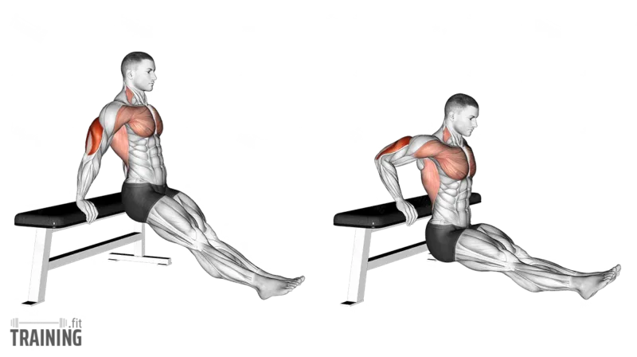
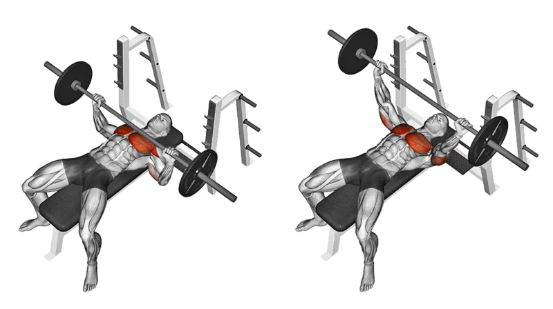
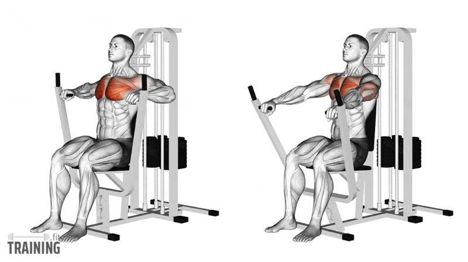
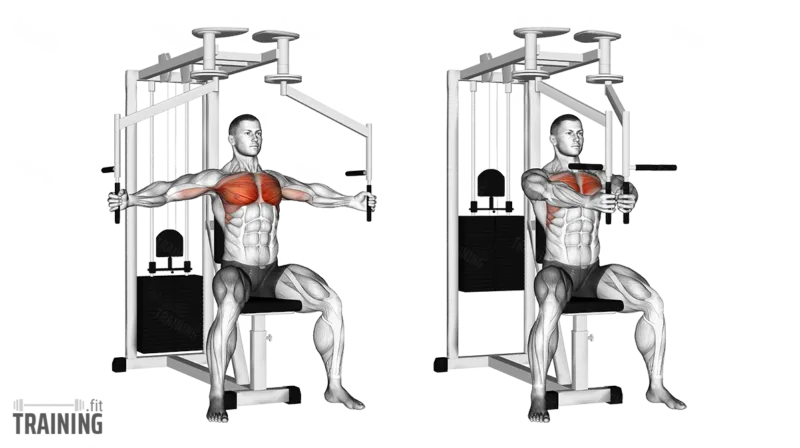
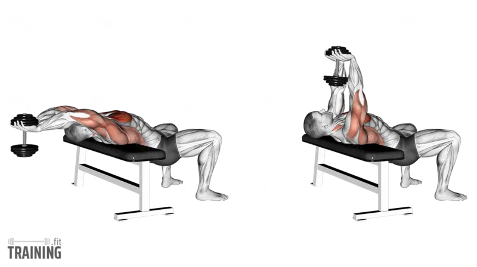
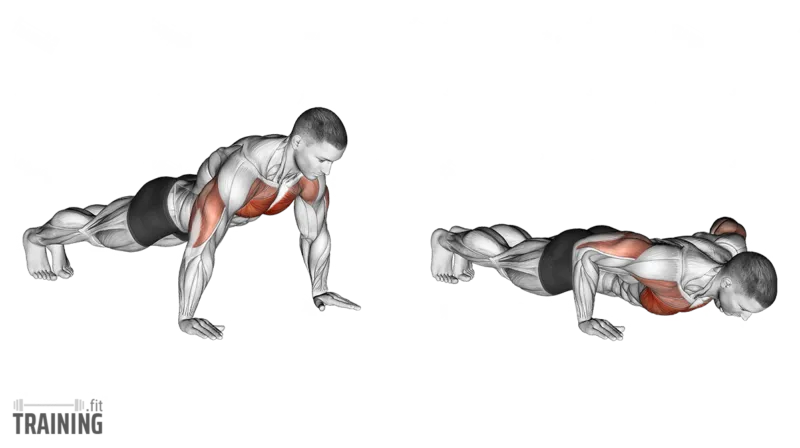
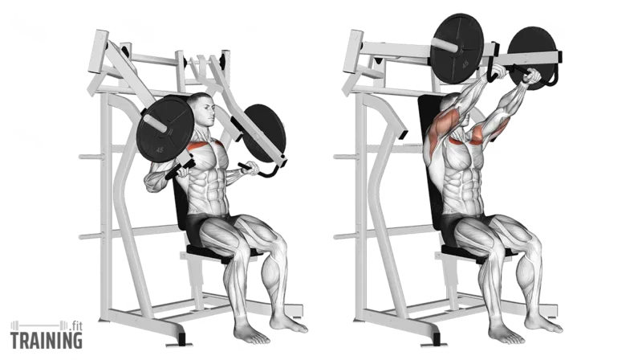

|  |
Bench Dip |
Pectoralis Major,Triceps Brachii |
Ellerinizi benche koyup kalçanızı öne alın, dirseklerinizi bükerek vücudunuzu indirin ve tekrar yukarı kaldırın. Hareketi kontrollü şekilde tekrarlayın. |
Omuz eklemine fazla yük binmesini önlemek için hareket sırasında dirseklerin fazla geriye gitmemesi gerekir. Aksi takdirde, omuz sakatlanmaları riski artar. |
|  |
Bench press |
Pectoralis Major, Pectoralis Minor |
Sırtüstü bench'e uzanın, barı omuz genişliğinden biraz geniş kavrayın, barı göğsünüzün üzerine indirin ve kontrollü bir şekilde yukarı kaldırın. |
Hareket sırasında sırtınızı doğal kavisinde tutup, kontrollü nefes alın.Dirseklerinizi yaklaşık 45 derece açıyla tutarak omuz eklemlerine aşırı yüklenmeyi önleyin. |
|  |
Chest Press |
Pectoralis Major |
Makineye oturun, sırtınızı dayayıp kollarınızı tutacakları omuz hizasında kavrayın. Kollarınızı öne doğru itin ve ardından kontrollü bir şekilde geri çekin |
Sırtınız makineye sabit kalmalı, hareket sırasında omuzlarınızı gereksiz yere kaldırmaktan kaçının. |
|  |
Machine Fly |
Pectoralis Major |
Göğüs press makinesine oturun, kollarınızı hafif bükük tutarak kollarınızı yana açın ve kontrollü bir şekilde öne doğru birleştirin. |
Omuzlarınızı makineye sabit tutarak aşırı gerilmekten kaçının ve hareketi kontrollü bir tempoda yapın. |
|  |
Pull Over |
Pectoralis Major, Latissimus Dorsi |
Bench'e sırtüstü uzanın, bir dumbbell’ı iki elinizle kavrayıp başınızın arkasına doğru indirin, ardından kontrollü bir şekilde yukarı kaldırın. |
Hareket sırasında dirseklerinizi hafif bükülü tutun ve belinizi aşırı kavisli yapmaktan kaçının. |
|  |
Push Ups |
Pectoralis Major, Anterior Deltoid |
Eller omuz genişliğinde yerde, vücut düz bir çizgide olacak şekilde kollarınızı bükerek göğsünüzü yere yaklaştırın ve ardından kollarınızı düzleştirerek yukarı kalkın. |
Vücut düz bir çizgide kalmalı, belinizi çökertmekten veya kalçanızı yukarı kaldırmaktan kaçının. |
 |
Incline Dumbbell Press |
Pectoralis Major, Clavicular Head |
Ayarlanabilir bir bench'i 30-45 dereceye ayarlayın, dumbbell'ları omuz hizasında tutup yukarı doğru itin ve kontrollü bir şekilde geri indirin. |
Sırtınızı doğal kavisinde tutun, ağırlıkları eşit bir hızla hareket ettirin ve dirseklerinizi çok fazla yana açmaktan kaçının. |
|  |
Incline Chest Press |
Pectoralis Major, Clavicular Head |
Makineye oturun, sırtınızı destekleyerek kollarınızı tutacaklara yerleştirin. Kollarınızı öne doğru iterek ağırlığı kaldırın ve kontrollü bir şekilde geri indirin. |
Sırtınızı makineye tam temas ettirin ve hareketi kontrollü şekilde yaparak omuz eklemlerine aşırı yüklenmekten kaçının. |